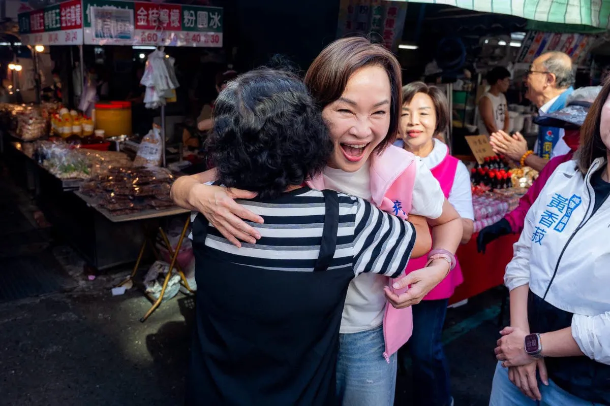
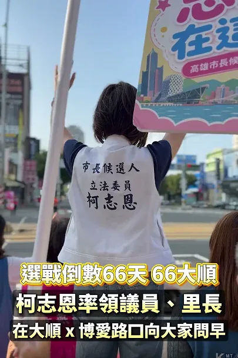
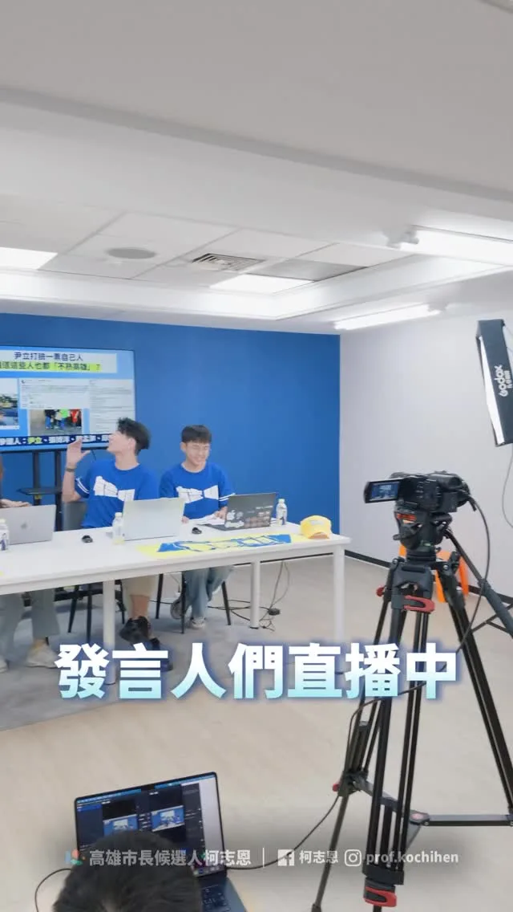
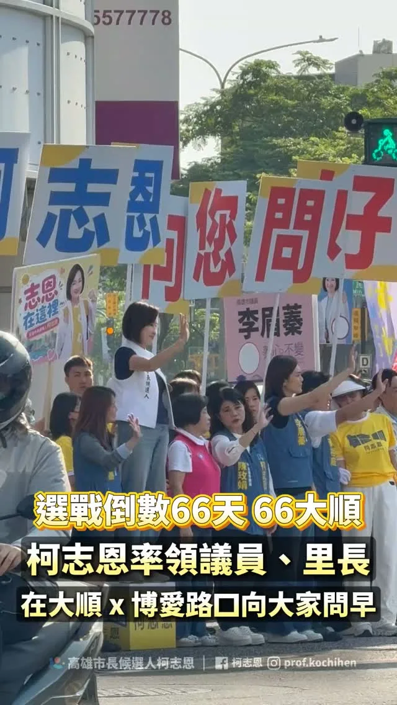

@prof.kochihen:中秋連假第一天，到市場祝福鄉親佳節愉快！ 一早來到三民區 #建興市場，向攤商朋友和採買的鄉親問候，也祝福大家中秋節快樂、闔家平安！ 一路走進市場，收到許多鄉親為我熱情加油。謝謝大家給我的鼓勵，每一份心意，我都會牢記在心。 更有攤商送上象徵「旺來」的鳳梨、代表「凍蒜」的蒜苗，還有菜頭，祝福我們「好彩頭」！ 謝謝建興市場的鄉親，也祝福所有高雄市民朋友：月圓人團圓、事事都圓滿；攤商朋友生意興隆、大家平安健康。
Accounts
| 平台 | 帳號 | 已收錄貼文 | 最後更新 |
|---|---|---|---|
| https://www.facebook.com/KoChihEn/ | 138 | 2026-09-25 10:34 | |
| https://www.instagram.com/prof.kochihen/ | 177 | 2026-09-23 19:56 | |
| Threads | https://www.threads.com/@prof.kochihen | 114 | 2026-09-25 11:15 |
| YouTube | https://www.youtube.com/channel/UCmDcMkSjhyj2R91z0FlGjAA | 80 | 2026-09-23 17:40 |
| TikTok | https://www.tiktok.com/@kochihen | 0 | — |
| LINE 官方帳號 | https://reurl.cc/MNQXRL | 0 | — |
| LINE 社群 | https://reurl.cc/lep726 | 0 | — |
Timeline
顯示 509 / 509 則

@prof.kochihen:中秋連假第一天，到市場祝福鄉親佳節愉快！ 一早來到三民區 #建興市場，向攤商朋友和採買的鄉親問候，也祝福大家中秋節快樂、闔家平安！ 一路走進市場，收到許多鄉親為我熱情加油。謝謝大家給我的鼓勵，每一份心意，我都會牢記在心。 更有攤商送上象徵「旺來」的鳳梨、代表「凍蒜」的蒜苗，還有菜頭，祝福我們「好彩頭」！ 謝謝建興市場的鄉親，也祝福所有高雄市民朋友：月圓人團圓、事事都圓滿；攤商朋友生意興隆、大家平安健康。


#教師節 前夕，向每一位默默耕耘的教育人致敬！ 今晚出席 #高雄市教育產業工會 感恩餐會，教育人挺教育人！現場氣氛十分熱絡，逐桌向老師們致意時，掌聲與歡呼不斷，更開心的是，遇到教過的學生也成為老師，彼此相互擁抱鼓勵，那一刻，更證明：教育人的心，是連在一起的！ 我從大學講台走進立法院，過去在立法院，大家肯定柯志恩是「最專業、最認真的教育立委」。今天，在高雄這塊土地上，更希望向所有的教育夥伴證明：未來若走進高雄市政府，我會是「最懂教育、最挺老師、最敢為基層扛責任的高雄市長」！ 因為，只有真正走過教育現場的人，才懂得第一線老師的辛苦與無奈。 我率先在立法院提出捍衛「教師離線權」，因為不能讓通訊軟體全天候侵蝕老師的休息時間與私人生活。 對於何耿旭理事長與高教產團隊所提出的各項教育合作訴求，我願給予最務實的承諾： *逐年降低班級人數，落實精緻教學 *貫徹行政減量，調降授課節數 *改善校事會議機制，建立公正的第三方調處機制 *增加特教資源與人力，拒絕只有口號的融合教育 *杜絕行政內耗，找回被撕裂的校園信任，把尊嚴還給老師！ *落實每年召開「教育圓桌會議」，由市長親自主持，不再讓第一線的聲音被鎖在冷氣房外！ 未來的高雄市政府，教育局將是大家最暢通的橋樑；而柯志恩，永遠是大家最堅實的後盾！ 不管當前教育環境如何不友善，要感謝、鼓勵所有仍堅守崗位的老師們，也誠摯祝福：教師節快樂！ #高雄 #教師 #教育

土地，是高雄人的家，不是隨意傾倒廢棄物的地方。 9月14日，我的團隊接到網路陳情，反映永安一處農地疑似遭大量堆置廢棄物。隔天，我和許采蓁議員的團隊立即到場勘查，沒想到眼前景象令人觸目驚心，近1800坪的農地，堆滿廢土、廢木材，堆置量約1.5萬立方公尺，換算起來，足足可以填滿6座奧運標準游泳池。周邊還是一片綠油油的稻田，原本的良田，卻成了一座廢棄物山。 今天，許采蓁議員也在市議會質詢揭發這起案件。市府表示早在去年12月就已經發現相關情況，今年年初也已將業者移送檢調，7月底要求提出清理計畫，卻要等到今年底才能完成清除。但該地在今年8月甚至還曾經發生火災燃燒。 我要問的是，既然去年就已經掌握，為什麼問題還能一路拖到今年？為什麼在已經發現、已經列管、甚至移送檢調之後，現場仍然持續堆置，甚至還發生火災？ 今天團隊再到現場查看，廢木材依然大量堆置、露天曝曬。這也正是我認為高雄現在最需要檢討的地方。不能每次都是等到事情發生、等到地方民眾陳情、等到民代調查，甚至引發大家關注之後，才開始處理。 美濃大峽谷、小港柏油山、燕巢垃圾山、田寮垃圾山，再到今天的永安廢材山。一塊又一塊土地被破壞，難道都要等到地方民眾陳情、民代調查，甚至引發大家關注之後，才開始處理？令人無法接受。 高雄要發展，但發展不能建立在犧牲土地與環境的代價上。高雄人的家園，不能任由廢棄物一座座堆起來。土地只有一塊，破壞了就很難恢復。我們不能再讓「發現一處、處理一處」成為常態，更不能只停留在事後查處。 真正要做的是把事前防範做好，強化監測、巡查、稽查與跨局處通報，對於已經列管的案件，也不能只是開單、移送之後就放著，而是要持續追蹤到真正改善為止。 未來如果我承擔市長的責任，我會要求相關局處加強查緝與後續追蹤，建立更完整的預警與巡查機制，在問題還沒有擴大以前，就先發現、先處理。該追查的要追查，該清除的要立即清除，更要把監測、稽查和責任追究真正做起來。 高雄的土地，不能再這樣被糟蹋。 無論他們掛上多少抹黑的看板，我們都不會被轉移焦點，該追查的責任，我們一定追到底。未來我也不會讓這樣的事情，一再發生。

昨天來到梓官大壽宮廟口開講，看到這麼多鄉親到場，也和方信淵、宋立彬、陸淑美三位議員及黃韻涵議員候選人一同討論梓官的未來。 梓官真的很美。許多人來到高雄，第一站常常就是到蚵仔寮吃海產。很多人說高雄最美的是西子灣，但在我眼裡，梓官的海線一樣有自己的魅力，只是這麼美的地方，不能只有一個蚵仔寮，觀光、交通、漁業，都還有很大的發展空間。 而最不能迴避的，就是治水。 上個月到典寶里勘災，看到淹水情況，也聽到鄉親說：「30年來都這樣。」箱涵、排水系統老舊等問題，地方早就知道，真正需要的是政府把資源用在最需要的地方。 高雄要進步，不能只有看得到科技產業，也要讓孩子願意留下來、讓薪水提高、讓環境更好，讓每一個地方都能分享到城市發展的成果。 所以我提出四個方向：薪水漲起來、人要留下來、環境好起來、高雄拚世界。 我希望十年、二十年後，大家回頭看2026年的選擇，會發現梓官真的變得更好，孩子留下來了，長輩生活得更有尊嚴，這片美麗的海線也被更多人看見。 這是我對高雄、也是對梓官最深的期待。 #高雄 #梓官


今天一早，和國民黨市議員及里長候選人一起來到大順博愛路口，向大家請安問好！

把台灣帶向世界，把世界帶進高雄！ 今晚參加「 #世界台灣商會聯合總會年會立法院晚宴 」，與來自全球各地的#台商 相聚一堂，也很高興 韓國瑜 院長南下 #高雄 同場交流，共同向長年在海外為台灣打拚的台商朋友表達敬意。 台商是 #台灣 真正的「日不落力量」，從亞洲、美洲到歐洲、大洋洲，只要太陽升起的地方，就有台商努力奮鬥的身影。大家憑藉勇氣與實力，在世界各地開創事業，也讓世界看見台灣的韌性與價值。 今年世界台商總會年會在高雄舉辦，別具意義。高雄因港而生、向海而行，有山、有海、有港、有河，更有一群認真打拚的高雄人，這座城市擁有厚實的產業基礎，也具備連結世界的潛力。 許多台商當年帶著 #一卡皮箱 走向世界，而我也是帶著一卡皮箱來到高雄，選擇留下來、扎根高雄。或許我們走過不同的人生道路，但彼此之間有著共通的語言，那就是「勇敢，是我們共同的名字」！ 期盼未來能有更多機會與大家攜手，讓台商的遠見與資源注入高雄，我們一起投資未來、建設高雄！

【9/19 Fengshan Mega Rally | Highlights of Chiang Wan-an's Speech】

很高興再次來到阿蓮光德寺，參加南部供佛齋僧、育僧誦戒、護國祈福大法會，這已經是我連續第三年來到 #光德寺 。 每次到來，都能感受到大家對 #佛法 的虔誠，也能感受到佛法所帶來的「法喜」與「喜樂」；這場法會不只有「供佛齋僧」，還有「育僧」與「誦戒」，其背後承載的，是讓佛法有人傳，讓善念有人接，讓慈悲一代一代延續下去。 在這個快速變動的社會，每個人都有自己的壓力與不容易，更需要多一點理解、多一點包容，也多一點為別人著想的心；所以對於政治人物來說，不只是參加一場法會，更是一段讓自己放慢腳步、沉澱心情、重新反省的時間，當每天面對不同的聲音與選擇時，更需要時時提醒自己，保持初心，也保有一份自省的心。 必須向所有長年護持法會的法師、護法與志工朋友致上敬意，也希望每次來到這裡，不只是接受大家的祝福，也把這份慈悲、智慧與善念帶回生活，帶到更多地方。 祈願佛法長存、正法久住，祈願社會祥和、國家安定，也祈願 #高雄 每一個家庭都平安健康。

@prof.kochihen:高雄就像一台跑車，唯有「換檔」衝刺，才能駛出全世界。 柯志恩提出「四個優先」： 「薪水漲起來」「讓人留下來」「環境好起來」「高雄拚世界」 讓高雄再創奇蹟，實現夢想海港，世界雄心！

[9/19 Fengshan Grand Rally | Highlights of Ko Chih-en's Speech]
#中秋 連假第一天，到 #市場 祝福鄉親佳節愉快！ 一早來到三民區 #建興市場，向攤商朋友和採買的鄉親問候，也祝福大家中秋節快樂、闔家平安！ 一路走進市場，收到許多鄉親為我熱情加油。謝謝大家給我的鼓勵，每一份心意，我都會牢記在心。 更有攤商送上象徵「旺來」的鳳梨、代表「凍蒜」的蒜苗，還有菜頭，祝福我們「好彩頭」！ 謝謝建興市場的鄉親，也祝福所有高雄市民朋友：月圓人團圓、事事都圓滿；攤商朋友生意興隆、大家平安健康。 #三民 微笑香蕉-黃香菽 黃柏霖 及 高雄市三民區市議員候選人童燕珍

@prof.kochihen:土地，是高雄人的家，不是隨意傾倒廢棄物的地方。 9月14日，我的團隊接到網路陳情，反映永安一處農地疑似遭大量堆置廢棄物。 隔天，我和許采蓁議員的團隊立即到場勘查，沒想到眼前景象令人觸目驚心，近1800坪的農地，堆滿廢土、廢木材，堆置量約1.5萬立方公尺，換算起來，足足可以填滿6座奧運標準游泳池。 周邊還是一片綠油油的稻田，原本的良田，卻成了一座廢棄物山。

@prof.kochihen:發言人在直播，柯老師給他們帶來「驚喜」。

昨天來到 #梓官大壽宮 廟口開講，看到這麼多鄉親到場，也和方信淵-高雄市議員、宋立彬 高雄市議員、陸淑美三位議員及黃韻涵 議員候選人一同討論梓官的未來。 梓官真的很美。許多人來到高雄，第一站常常就是到蚵仔寮吃海產。很多人說高雄最美的是西子灣，但在我眼裡，梓官的海線一樣有自己的魅力，只是這麼美的地方，不能只有一個蚵仔寮，觀光、交通、漁業，都還有很大的發展空間。 而最不能迴避的，就是治水。 上個月到典寶里勘災，看到淹水情況，也聽到鄉親說：「30年來都這樣。」箱涵、排水系統老舊等問題，地方早就知道，真正需要的是政府把資源用在最需要的地方。 高雄要進步，不能只有看得到科技產業，也要讓孩子願意留下來、讓薪水提高、讓環境更好，讓每一個地方都能分享到城市發展的成果。 所以我提出四個方向：薪水漲起來、人要留下來、環境好起來、高雄拚世界。 我希望十年、二十年後，大家回頭看2026年的選擇，會發現梓官真的變得更好，孩子留下來了，長輩生活得更有尊嚴，這片美麗的海線也被更多人看見。 這是我對高雄、也是對梓官最深的期待。 #高雄 #梓官 #廟口開講
今天一早，和國民黨市議員及里長候選人一起來到大順博愛路口，向大家請安問好！ 一早就遇到許多熱情的市民朋友，大家揮手、打招呼，短短一個早晨，感受到滿滿的高雄溫暖。 中秋將至，也適逢教師節，祝福大家中秋佳節愉快、教師節快樂！ 月圓人團圓，願每個家庭都平安順心、幸福團圓。

@prof.kochihen:世界無車日，是重新思考城市交通的關鍵時機。 除了持續提升低碳運輸的品質與使用率，更要從市民每天的生活需求出發，讓步行、騎自行車、大眾運輸與汽機車，都能有更完善的交通環境，打造安全、便利、舒適的高雄。 五大政策，打造高雄友善交通新生活。

【919鳳山大造勢｜蔣萬安演講精華】 #蔣萬安 @wanan.chiang 市長：「柯志恩持續深耕高雄，兌現承諾、說到做到。」 「她能讓高雄的進步走出舞台、走入巷弄；走出市區、走入38個行政區，讓高雄更加耀眼！」 #柯志恩 #蔣萬安 #李四川 #王金平 #大風起 #夢想海港 #世界雄心

[Gushan Temple Square Speech Highlights] Ke Chih-en: This Is My Home! #KeChihEn #TempleSquare #Ka...

@prof.kochihen:客庄有青年，客家就有未來 四年前，我曾在美濃天后宮辦過廟口開講。那晚廟埕來了好多鄉親，給予我滿滿的熱情與支持，我一直都感恩在心。 說到美濃，大家熟悉粄條、紙傘、藍染和田園風光。對生活在這裡的鄉親來說，客庄更是每天的生活：年輕人回鄉找得到機會，農產和工藝賣得出去，旅客願意留下來，孩子在家裡、學校和街坊都能自然說客語。這些事，我會放進市政裡，認真來做。

【919鳳山大造勢｜柯志恩演講精華】 高雄就像一台跑車，唯有「換檔」衝刺，才能駛出全世界。 柯志恩提出「四個優先」： #薪水漲起來 #讓人留下來 #環境好起來 #高雄拚世界 讓高雄再創奇蹟，有志一同，翻轉高雄！ #柯志恩 #蔣萬安 #李四川 #王金平 #大風起 #夢想海港 #世界雄心
親愛的鄉親與好朋友們，大家中秋節快樂。 今天是中秋佳節，相信許多人都已經回到家中，準備好和家人一起享用烤肉月餅與柚子了。 在這個美好的日子裡，最幸福的事莫過於月圓人團圓。希望大家能把握這個溫馨的節日，和最愛的家人親友聚在一起，好好吃頓飯，享受相聚的時光。 祝福各位鄉親以及所有好朋友們，中秋佳節愉快，闔家平安健康。 連假期間，我們還是繼續 #繞著高雄跑、和鄉親見面！ 今天早上來到 #三民建興市場 ，明早則會前往 #旗山第一公有市場 。假期不打烊，腳步也不停歇，歡迎各位鄉親好朋友一起來走走、聊聊天、打聲招呼！ 期待在市場和大家見面！

土地，是高雄人的家，不是隨意傾倒廢棄物的地方。 9月14日，我的團隊接到網路陳情，反映永安一處農地疑似遭大量堆置廢棄物。隔天，我和許采蓁議員的團隊立即到場勘查，沒想到眼前景象令人觸目驚心，近1800坪的農地，堆滿廢土、廢木材，堆置量約1.5萬立方公尺，換算起來，足足可以填滿6座奧運標準游泳池。周邊還是一片綠油油的稻田，原本的良田，卻成了一座廢棄物山。 今天，許采蓁議員也在市議會質詢揭發這起案件。市府表示早在去年12月就已經發現相關情況，今年年初也已將業者移送檢調，7月底要求提出清理計畫，卻要等到今年底才能完成清除。但該地在今年8月甚至還曾經發生火災燃燒。 我要問的是，既然去年就已經掌握，為什麼問題還能一路拖到今年？為什麼在已經發現、已經列管、甚至移送檢調之後，現場仍然持續堆置，甚至還發生火災？ 今天團隊再到現場查看，廢木材依然大量堆置、露天曝曬。這也正是我認為高雄現在最需要檢討的地方。不能每次都是等到事情發生、等到地方民眾陳情、等到民代調查，甚至引發大家關注之後，才開始處理。 美濃大峽谷、小港柏油山、燕巢垃圾山、田寮垃圾山，再到今天的永安廢材山。一塊又一塊土地被破壞，難道都要等到地方民眾陳情、民代調查，甚至引發大家關注之後，才開始處理？令人無法接受。 高雄要發展，但發展不能建立在犧牲土地與環境的代價上。高雄人的家園，不能任由廢棄物一座座堆起來。土地只有一塊，破壞了就很難恢復。我們不能再讓「發現一處、處理一處」成為常態，更不能只停留在事後查處。 真正要做的是把事前防範做好，強化監測、巡查、稽查與跨局處通報，對於已經列管的案件，也不能只是開單、移送之後就放著，而是要持續追蹤到真正改善為止。 未來如果我承擔市長的責任，我會要求相關局處加強查緝與後續追蹤，建立更完整的預警與巡查機制，在問題還沒有擴大以前，就先發現、先處理。該追查的要追查，該清除的要立即清除，更要把監測、稽查和責任追究真正做起來。 高雄的土地，不能再這樣被糟蹋。 無論他們掛上多少抹黑的看板，我們都不會被轉移焦點，該追查的責任，我們一定追到底。未來我也不會讓這樣的事情，一再發生。
Spokesperson live-streaming, Professor Ke brings them a "surprise". #KeChihEn #CommonGoals #Kaohs...

@prof.kochihen:今天一早，和國民黨市議員及里長候選人一起來到大順博愛路口，向大家請安問好！ 一早就遇到許多熱情的市民朋友，大家揮手、打招呼，短短一個早晨，感受到滿滿的高雄溫暖。 中秋將至，也適逢教師節，祝福大家中秋佳節愉快、教師節快樂！ 月圓人團圓，願每個家庭都平安順心、幸福團圓。
今天一早，和國民黨市議員及里長候選人一起來到大順博愛路口，向大家請安問好！ 一早就遇到許多熱情的市民朋友，大家揮手、打招呼，短短一個早晨，感受到滿滿的高雄溫暖。 中秋將至，也適逢教師節，祝福大家中秋佳節愉快、教師節快樂！ 月圓人團圓，願每個家庭都平安順心、幸福團圓。

#世界無車日，是重新思考城市交通的關鍵時機。 除了持續提升低碳運輸的品質與使用率，更要從市民每天的生活需求出發，讓步行、騎自行車、大眾運輸與汽機車，都能有更完善的交通環境，打造安全、便利、舒適的高雄。 #五大政策，打造高雄友善交通新生活。 一、落實人本交通，把好走的路還給行人 下了車，大家都是行人。 目標在2030年，將都市計畫區內12米道路的人行道覆蓋率提升至65%。讓城市裡的長輩、孩子，以及推著嬰兒車的父母，都能安心行走。 二、推動安心通學，守護每一個孩子的上學路 推動「安心通學圈」，以校園周邊為核心，全面改善學童通學路線，並逐步將範圍延伸到社區，打造15分鐘步行生活圈，讓孩子安全上學，也讓家長更加放心。 三、打造友善步行環境，讓城市更舒適 1. 推動「八年百萬植樹計畫」，全面檢視全市樹種，以原生樹種為核心，增加具韌性的行道樹，讓更多道路擁有綠蔭，也降低颱風造成樹木倒塌的風險。 2. 打造「城市風廊」，透過都市規劃將基地通風率納入都市更新獎勵，讓都市水系與綠蔭相互串聯，形成自然通風廊道，降低熱島效應。 3. 推動「連續型遮蔭步道」，善用騎樓、建築物內縮、穿堂、智慧型遮陽傘及連續遮廊等方式增加行人遮蔭，參考新加坡、韓國等城市經驗，讓市民擁有更舒適的步行環境。同時善用透水鋪面、路樹養護等方式更新人行道，減少積水並降低交通噪音。 四、大眾運輸使用更安心，提升候車與轉乘品質 改善公車候車區與照明系統，逐步建置公車等候區緊急服務鈴，並與轄區派出所連線，提升候車環境的安全與便利，讓市民搭乘大眾運輸更加安心。 五、高雄「雄好騎」，打造更完整的自行車生活圈 1. 推動YouBike前30分鐘免費，鼓勵短程通勤、觀光騎乘與低碳代步。 2. 推動「銀髮樂騎計畫」，開放敬老卡扣點使用YouBike與電輔車，建立「敬老卡加傷害險」一站式開通機制，降低長輩使用門檻。 3. 升級自行車道與站點，串接捷運、輕軌沿線，以及商圈、住宅區與觀光景點，增設保護型自行車道，並將YouBike站點擴增至1,800站。 4. 導入AI與大數據改善車輛調度、維修效率與站點配置，將低使用率站點移往需求熱區，補足公車轉乘最後一哩路。 5. 推動自行車上輕軌，先於離峰時段試辦一般自行車上輕軌，強化自行車與大眾運輸的轉乘便利性。 一座好的城市，交通不只是通行，更與每一個人的日常生活息息相關。 從步行、騎車到搭乘大眾運輸，我們要讓每一種交通方式都更加安全、便利、舒適，也讓不同年齡、不同需求的市民，都能享有更好的城市生活。 世界無車日，讓我們一起打造更友善、更宜居、更有活力的高雄。

Sanmin District Sanfong Temple Speech: Ke Chih-en returns to the "original starting point" of the...

[Highlights from the Xinxing District Temple Square Speech] Let Kaohsiung's next generation thriv...

客庄有青年，客家就有未來 四年前，我曾在美濃天后宮辦過廟口開講。那晚廟埕來了好多鄉親，給予我滿滿的熱情與支持，我一直都感恩在心。 說到美濃，大家熟悉粄條、紙傘、藍染和田園風光。對生活在這裡的鄉親來說，客庄更是每天的生活：年輕人回鄉找得到機會，農產和工藝賣得出去，旅客願意留下來，孩子在家裡、學校和街坊都能自然說客語。這些事，我會放進市政裡，認真來做。 1️⃣ 高雄接棒，讓世界看見客家 我會向中央爭取續辦「世界客家博覽會」，並由高雄承辦。以美濃、杉林、六龜等客庄為舞台，串聯海外客家社群，定期舉辦國際論壇、青年交流與藝文合作，把高雄客庄介紹給世界，也一步步把高雄打造成南方客家文化首都。 2️⃣ 客青返鄉，資金、品牌、通路一起到位 推動「高雄客庄復興計畫」，18至40歲青年投入文化、農業、工藝、觀光或地方創生，符合資格並通過審查者，市府每年最高補助50萬元，也協助申請中央資源，兩年合計最高可達200萬元。 市府也會建置客家文化新創集資平台，推動「高雄客庄品牌」與「客家之光」評選，把農產、美食、工藝和文創商品送上共同電商平台。鄉親專心把產品做好，品牌、行銷和通路，市府一起來幫忙。 3️⃣ 從旗美出發，把人潮帶進東九區 以美濃、旗山為旅遊雙核心，改善公共運輸和轉乘，串起內門、杉林、六龜、甲仙等山城景點。旅客從旗美出發，沿著山城慢慢走，半日遊也能變成兩天一夜。 再推出「高雄好客券」：入住客庄地區的合法旅宿或露營場，消費滿1,500元，就能領取500元好客券，到在地特約店家使用。人留下來，住宿、餐飲、農產和商店就有更多生意。 4️⃣ 客家活動我來挺，客庄故事留得住 為鼓勵舉辦客家活動，市府對區公所、各級學校與客家團體文化活動補助，也要實在加碼。同一申請單位每年補助上限由10萬元提高到20萬元；政策性計畫或具文化傳承意義的大型活動，由30萬元提高到60萬元，讓長年在地方保存文化的人得到更多支持。同時，也支持以高雄客庄為主題的音樂、影視及文化創作，讓客庄的美、文化及歷史記憶被世界看見，也希望藉此吸引更多旅客到訪，帶動地方觀光與經濟發展。 現有「高雄客家月」將擴大整合，升級為「高雄客家季」。客家流行音樂祭、市集、工藝展、影像展演與歲時祭典接力登場，客庄與都會區一起熱鬧，做成市民會期待、外地旅客也願意專程參加的高雄盛典。 同時建立「高雄客庄數位典藏」，逐步收錄庄頭歷史、耆老口述、老照片、工藝技法與文化故事，提供學校教學、館舍展示和旅遊導覽使用，把珍貴的地方記憶好好保存下來。 5️⃣ 客家語言不流失，傳統工藝有傳承 2030年前，生活客語和沉浸式教學的參與學校數要倍增，並以三民、鳳山等都會區為目標持續擴大辦理。客語認證獎勵也提高為初級1,000元、中級1,500元、中高級3,000元、高級5,000元、專業級6,000元，鼓勵更多孩子和年輕人開口說客語。 伙房、老街、伯公、敬字亭和歷史聚落，要好好保存；油紙傘、藍染、竹編等工藝，也要建立傳承和培育機制。家裡有人說、學校有人教、手藝有人接，客家文化才會一代一代留在生活裡。 我期待四年後再走進美濃，看到返鄉青年開了店、庄頭產品接到更多訂單，孩子用客語和長輩聊天，外地旅客住了一晚還捨不得走。 上週，再度前往美濃天后宮廟口開講，看到鄉親對美濃的期待、對客庄的建議。這些年來，來自客家鄉親的鼓勵，我一直記得，恁仔細！ #高雄客家 #客庄有青年客家有未來 #這柯不一樣

同為教育人，感謝教師職業工會的力挺與推薦！ #教師節 前夕，走進 #高雄市教師職業工會 模範教師表揚活動現場，看見許多熟悉的面孔與滿場熱情的教育夥伴，內心除了感動，更多的是深刻的共鳴與踏實。 非常榮幸能獲得教師職業工會的「唯一推薦」。這份情義相挺，銘記在心、加倍珍惜。未來若順利當選市長，市府與教師絕對是夥伴關係，也樂於接受工會的鞭策與監督，因為我們共同的目標，就是希望高雄的教育更好！ 長期為教育奔走的全教總前理事長侯俊良，細數我們過去在立法院為了教育法案一次次的專業討論與堅持，肯定我始終站在教育第一線，更期盼由最懂教育的立委，來掌舵高雄教育的未來。工會秘書長于居正也表達，感謝我們通過五一勞動節與教師節放假修法，並在第一時間簽署並允諾工會的教育訴求，未來將落實合理化加班補償、恢復編列教師文康活動費，並持續降低班級人數、減輕教學和行政負擔。 這幾年教育環境瀰漫前所未有的緊張與不安，相較過去社會對師道的尊崇，如今許多悖離基層的不當政策，反而成為壓垮教師身心的沉重枷鎖。正因如此，我是第一位向教育部爭取教師「離線權」的立委！遺憾的是，中央至今僅以一紙公文函示建議各級學校落實。我認為保障老師下班不受干擾的喘息空間，必須有更具法律效力的規範，絕不能讓基層老師，獨自面對無窮盡的通訊轟炸與身心耗損。 同為「 #教育人 」，關心教育對我而言就像呼吸一樣自然。我深知，面對繁瑣沉重的行政業務、日趨複雜的親師溝通，以及機制不彰、嚴重折磨第一線身心的「 #校事會議 」，教育部不能再因循苟且、舉棋不定！ 教室講台面積雖小，托起的卻是整座城市的未來。教育好一個孩子，往往能改變一個家庭、進而改變社會。老師需要的不是廉價的掌聲，而是尊嚴與制度的後盾。 不管當前環境多麼嚴峻，我一定傾盡全力，給予每位默默付出的教師最堅實的支持。未來若入主市府，絕對結合教師、校長與家長的力量，將 #高雄 的教育打造成「六都第一」！教育人挺教育人，給我四年，讓我為高雄的教育拚下一個十年！